Welcome to the hands-on portion of this workshop!
Now that you've learned a little bit about Solace and watched the demo video to set the stage, it's your turn to try things out for yourself. We'll jump into the goals of this portion of the workshop shortly, but first let's recap the main technologies you'll be using:
- Solace Cloud: Enterprise-grade messaging as a service, on demand in your favorite public and virtual private clouds, and in your preferred on-premises and cloud Kubernetes environments. You'll log into the Solace Cloud console, start your own service, and use it to run the event streams of your applications.
- Solace PubSub+ Event Portal: You'll be extending the model that you saw in the video demo. While you're not working as a team during this workshop think about how a tool like this would be useful as you collaborate with your team on a day to day basis to design, implement, and iteratively enhance applications.
- AsyncAPI: AsyncAPI is an open source initiative that seeks to improve the current state of Event-Driven Architectures (EDA). The initiative's long-term goal is to make working with EDAs as easy as it is to work with REST APIs, from documentation to code generation, from discovery to event management. You'll be exporting AsyncAPI specifications from Event Portal and using the AsyncAPI Generator to kickstart application development.
- Spring Cloud Stream: Spring Cloud Stream is a framework for building highly scalable event-driven microservices connected with shared messaging systems. The framework provides a flexible programming model built on already established and familiar Spring idioms and best practices. You'll generate a code skeleton for a Spring Cloud Stream application and then sprinkle in some business logic, seeing how easy it is to develop event-driven applications with modern tooling.

You are working as a technologist at Retail Co—the world's premier retailer—during an exciting time. Forward looking executives have decided to transform the overall business architecture of the company to an event based model in order to become more agile as a business, to improve SLAs, and to reduce costs. This transformation initiative was prompted by technology teams running into challenges related to data replication, data movement, and data access and security because Retail Co's core business processes consist of a complicated sprawl of distributed internal and external systems, and many of those systems have dependencies on mainframe systems.
The initial use case Retail Co's executives are targeting is their primary order process.
As the order process exists today, orders are flowing from Retail Co's customer facing web frontend to a mainframe system of record. Transforming this process will first require those orders to be captured using a change data capture (CDC) strategy and pushed into the Solace event mesh. Once the order events are flowing throughout the Solace event mesh, application teams will be able to build event-driven microservices to do things with the order events like order validation, product line specific logic, etc.
Architecture diagram
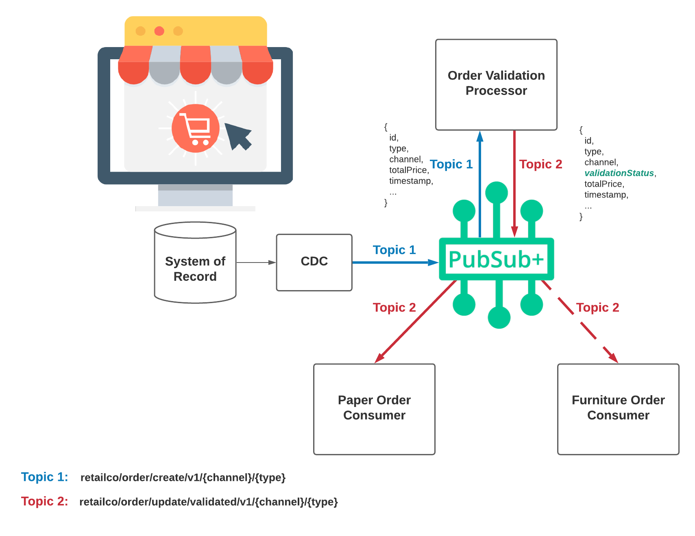
Recap of video demo
So far, Retail Co's stellar innovation group has already been able to:
- Deploy event brokers: moving to an event based model is impossible without an intermediary system called an event broker. Event brokers are like databases in that it's best to deploy them close to where your applications are running. Retail Co's engineers have successfully deployed event brokers into all the locations where applications are running.
- Create an event mesh: some event brokers require outside processes to replicate events between brokers/clusters, but Solace PubSub+ Event Brokers have built-in features that allow you to connect them to form an event mesh. An event mesh allows your applications to connect to their local event broker but send/receive events to/from applications connected to any other event broker connected to the mesh. Logically it acts as one giant event broker. Retail Co have configured the event brokers they deployed to form an event mesh.
- Model the initial event flows in Event Portal: the model currently includes the CDC Order Source, Order Validation Processor, and Paper Order Consumer applications, showing events sourced from a mainframe system being validated and processed by event-driven microservices. This model was built to be extended and iterated on as more application teams transition to adopt the event based model of building applications.
- Event-enable mainframe order systems: it's currently not cost effective to replace mainframe systems, so the next best thing is to extend their value by making their data readily available throughout the enterprise. In practice, this is usually accomplished using strategies like change data capture (CDC) or bridging (MQ, REST, etc). In the interest of not bloating this CodeLab with too many requirements, this step was mimicked with a CDC Order Source—a small Node.js application that publishes out OrderCreated events.
- Build Order Validation Processor and Paper Order Consumer microservices: Retail Co's stellar innovation group has built out the first event-driven microservices in the company in order to prove out a multi-step event-driven process. Order Validation Processor consumes OrderCreated events and publishes different flavors of OrderValidated events, and the Paper Order Consumer application consumes PaperOrderValidated events. Next step is migrating crufty old services as well as building net new microservices to consume the event streams that the innovation group has made readily available in the event mesh.
What you'll be doing
- Deploy an event broker: even though event brokers are something that are usually managed by central teams and exposed to application teams, and the Retail Co's innovation group has already set up an event mesh, being the good technologist that you are you want to test things out yourself. For the purposes of this workshop, you'll be deploying a Solace PubSub+ Event Broker: Cloud developer-tier service.
- Extend the Event Portal model: you'll take the initial Event Portal model that includes the CDC Order Source, Order Validation Processor, and Paper Order Consumer applications and extend it to include another consumer application—the Furniture Order Consumer. The point of this exercise is to click around and get a feel for Event Portal as well as to appreciate how it aids collaboration, discovery, and event reuse across teams.
- Develop the Furniture Order Consumer: you'll export the AsyncAPI specification for the Furniture Order Consumer application you just modeled, generate a Spring Cloud Spring code skeleton from it, and then fill in some very basic business logic to see how easy it is to interact with events once they're on a Solace event mesh. Solace makes filtering events dead simple, so adding product line specific microservices like this one is as easy as subscribing to a subset of the overall orders event stream using topic filters—no provisioning/broker configuration changes required. This will show you that modern tooling makes event-driven architecture accessible to developers of all experience levels because frameworks are available that abstract away complicated messaging APIs in favor of event-handler style code execution.
- Run your application: you'll run the Furniture Order Consumer you just developed and feel like an event-driven pro.
This page covers the setup required for this CodeLab.
AsyncAPI Generator
You'll need either Node.js or Docker to install/run the AsyncAPI Generator:
Node
- Node.js v12.16+ (Check version using
node -v) - npm v6.13.7+ (Check version using
npm -version)
On Mac, you can brew install node.
For other systems, Installing Node.js via package manager.
Docker
Spring Cloud Stream
Spring Cloud Stream requires Java and Maven to use.
- Java 1.8+ (Check version using
java -version) - Maven 3.3+ (Check version using
mvn -version)- On Mac you can
brew install maven - Other install instructions here
- On Mac you can
- Your favorite Java IDE
Solace Cloud
If you already have a Solace Cloud account just login, otherwise please sign-up for a free Solace Cloud Account using this link.

This page covers how to start a Solace PubSub+ Event Broker: Cloud service.
Step 1: From the Cluster Manager tab, click on the + button
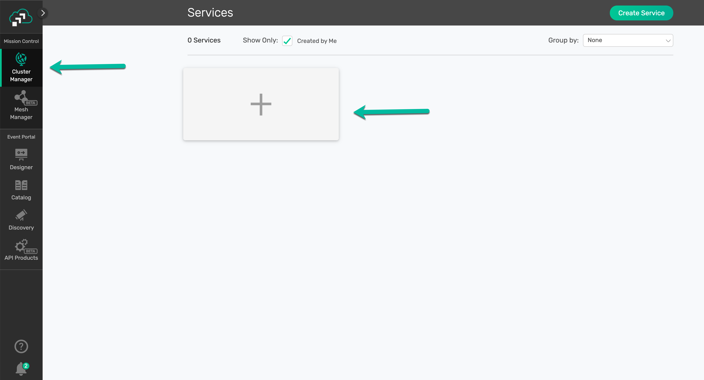
Step 2: Fill out the required details for the service
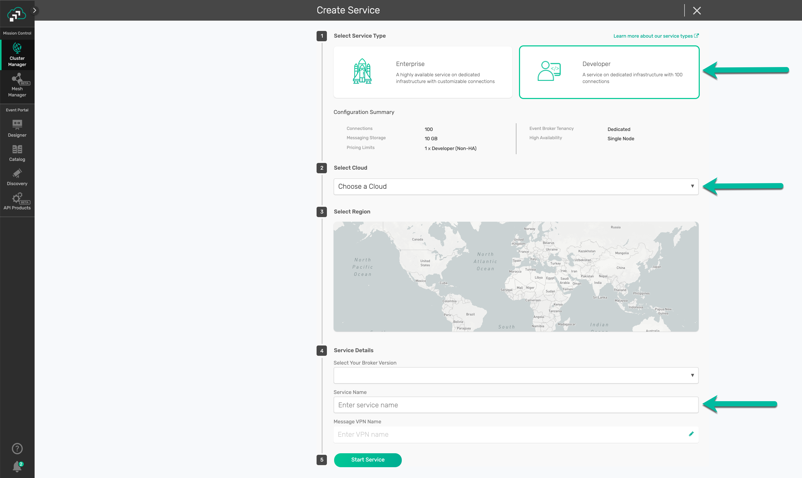
- Select Developer Service Type
- Select a public cloud to deploy the service in
- Give the event broker service a name.
<cloud provider>-<your name>is a good naming convention, e.g.aws-andrew-roberts.
Step 3: Wait for the service's underlying resources to provision
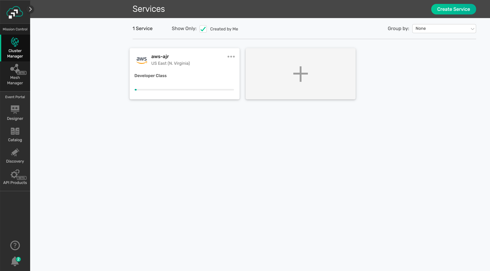
Step 4: Explore the management console for your new event broker service
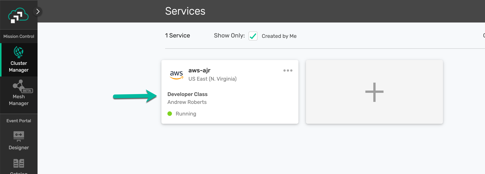
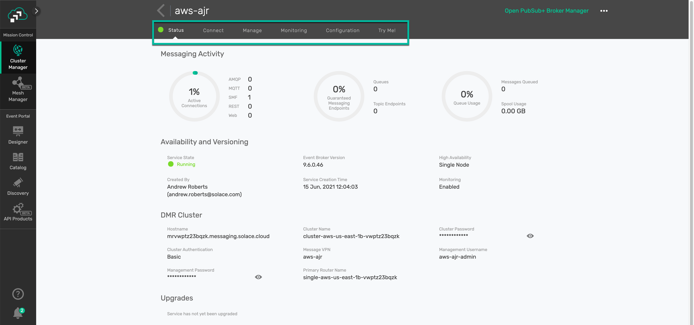
This page covers how to model the Furniture Order Consumer microservice in Event Portal.
Step 1: Import the initial Application Domain model
As described in the Use Case Overview page, Retail Co's stellar innovation group has put together a model in Event Portal for the initial event flows that include the CDC Order Source, Order Validation Processor, and Paper Order Consumer applications, showing events sourced from a mainframe system being validated and processed by event-driven microservices.
To import the initial model, first download the Application Domain export file: RetailCo-Template-Initial.json
You can download the file via curl or by cloning the git repo
curl -k -XGET https://github.com/solacese/retail-dev-workshop/blob/master/event-portal/RetailCo-Template-Initial.json -o RetailCo-Template-Initial.json
OR
git clone https://github.com/solacese/retail-dev-workshop.git
Inside of your logged into Solace Cloud Account navigate to the Event Portal Designer by clicking "Designer" in the menu on the left.
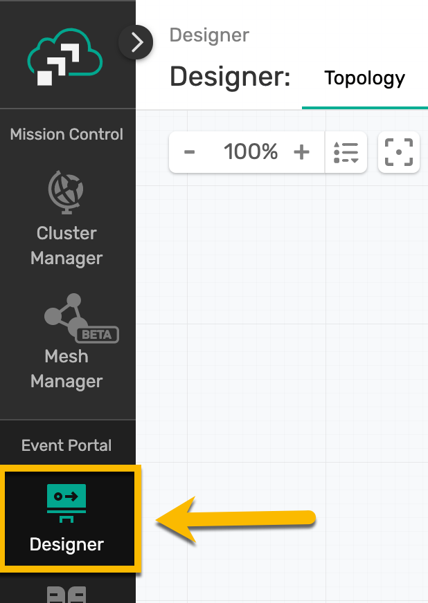
Then import the previously downloaded Application Domain file by right clicking on the Designer canvas like in the screenshot below.
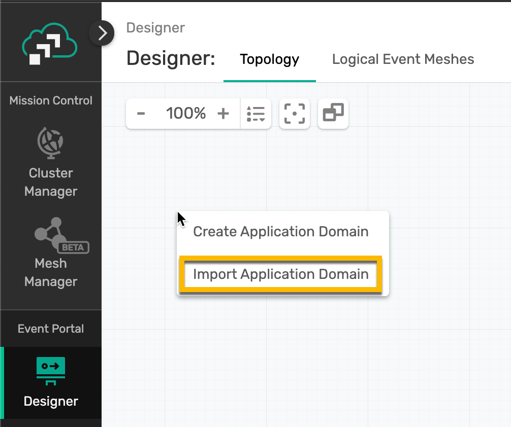
Step 2: Extending the initial model
Now that you're familiar with the use case and you've imported the Application Domain into the Event Portal, let's put our application developer team hats on and update the model to include another application.
Open the RetailCo-Template-Initial Application Domain that you previously imported in the Event Portal Designer (or your ready-to-go personal Application Domain if you're currently in an instructor led workshop, FirstName LastName). You should see the following model:
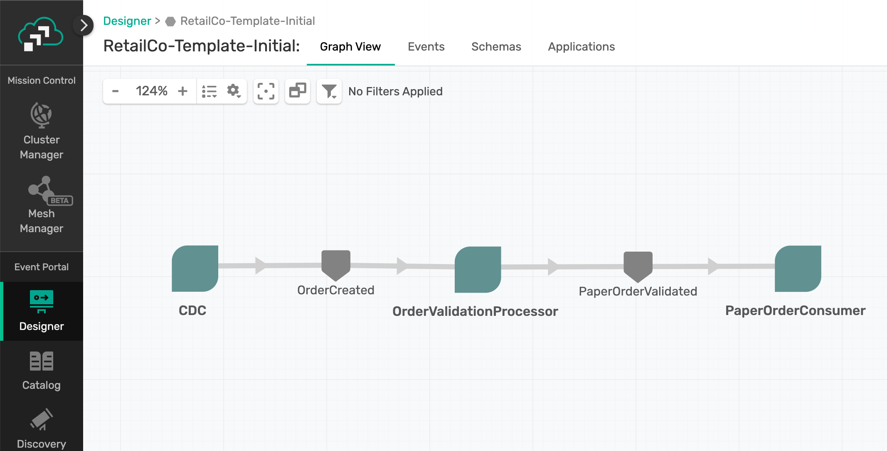
We'll be extending this initial Application Domain model by adding a Furniture Order Consumer Application. Similar to the Paper Order Consumer that is already modeled, the Furniture Order Consumer application will be consuming a specific flavor of validated OrderCreated events—FurnitureOrderValidated events.
Add the FurnitureOrderConsumer Application
The first step towards doing this is to add the FurnitureOrderConsumer.
Right click on the background of the canvas of the Graph View and choose Create Application, shown in screenshot below.
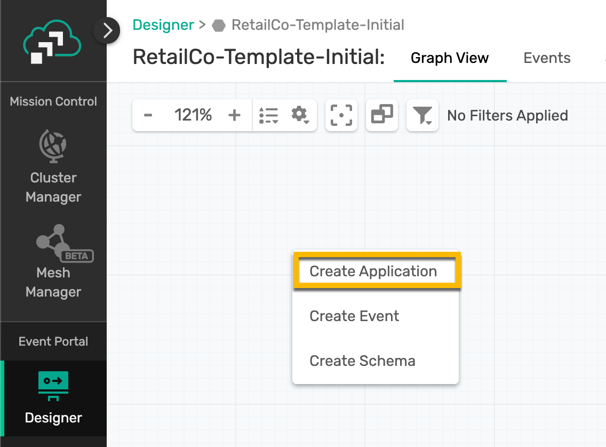
Fill in the fields as follows:
- Name: FurnitureOrderConsumer
- Description: This is a Spring Cloud Stream microservice that will consume FurnitureOrderValidated events.
- Application Type: Leave as "Standard"
- Owners: Click Add/Remove Owners and choose yourself
- Tags: Click Add/Remove Tags and add "SCSt" as a tag. This tag is short for "Spring Cloud Stream" which is the framework we will use to develop our microservice later.
- Associated Events/Client Delivery Endpoints: Leave empty for now
- Click the Save Button
✅ You should now see FurnitureOrderConsumer added to the graph.
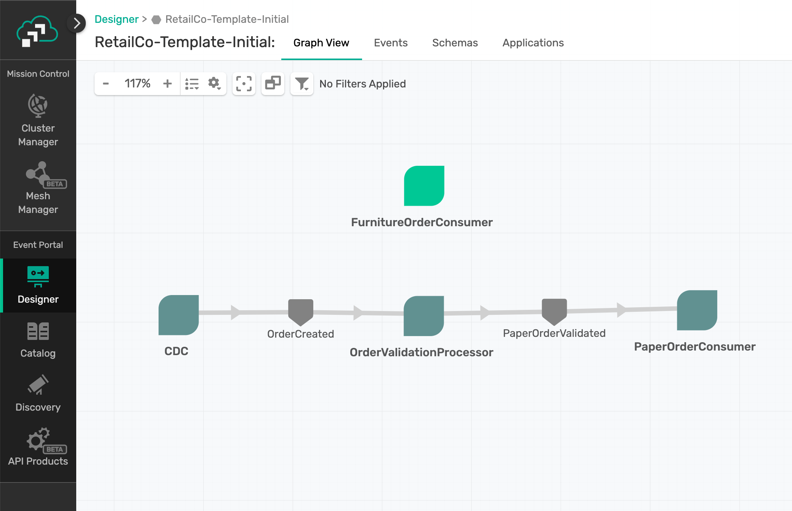
Add the FurnitureOrderValidated Event
Next we need to create the FurnitureOrderValidated event and associate it with the OrderValidated schema that defines it's payload.
Right click on the background of the canvas of the Graph View and choose Create Event, shown in screenshot below.
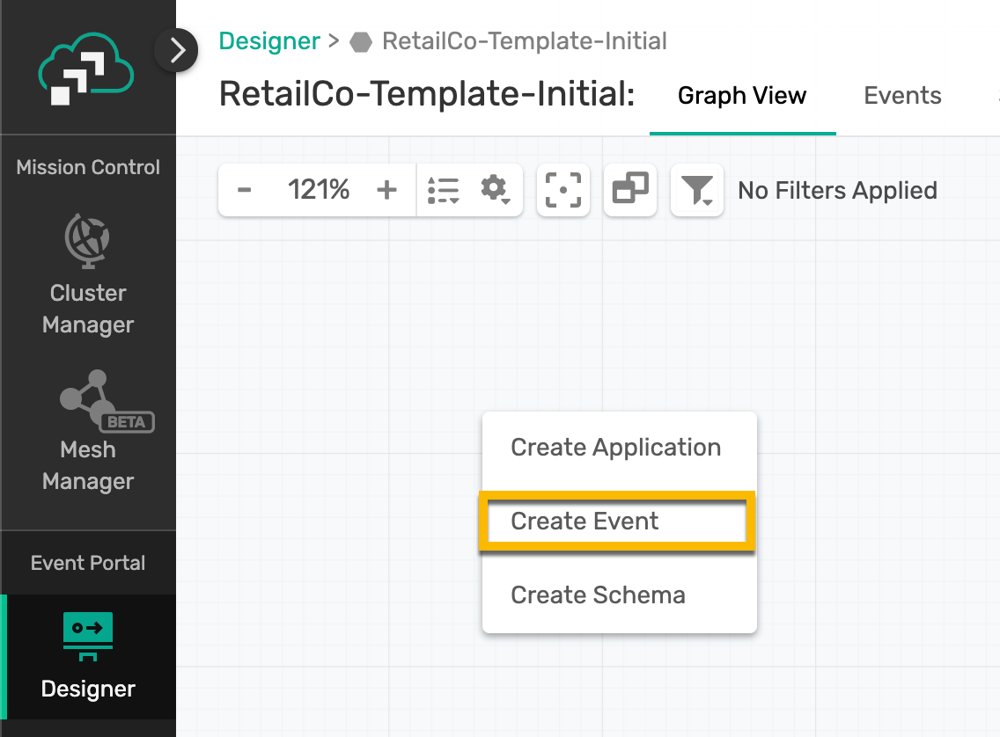
Fill in the fields as follows:
- Name: FurnitureOrderValidated
- Leave the Shared checkbox unticked.
- Description: This event contains the details associated with validated furniture orders.
- Logical Event Mesh: Select TemplateInitial
- Topic Address: Use the topic builder to create the structure
retailco/order/update/validated/v1/B2C/furnitureby creating one topic level at a time. When you click Create Level, you'll have to fill out some details. Notes: all topic levels are Literal in this example, and Name refers to the actual value of that particular topic level (unless you are defining a Variable topic level, in which case the name is simply an Event Portal-only logical label). - Value: Select Schema and then pick OrderValidated from the dropdown.
- Owners: Click Add/Remove Owners and choose yourself
✅ Go ahead and click Save to complete the creation of our FurnitureOrderValidated event.
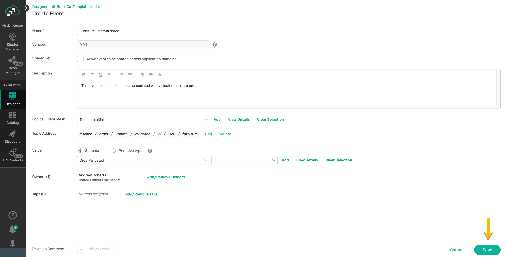
After you click save, if you click the Events tab in the top tab panel, then FurnitureOrderValidated, you'll see the details of the event you just created. If you then click the green View Details link next to the Schema property, you'll be able to see the details of the OrderValidated schema you associated with the event.
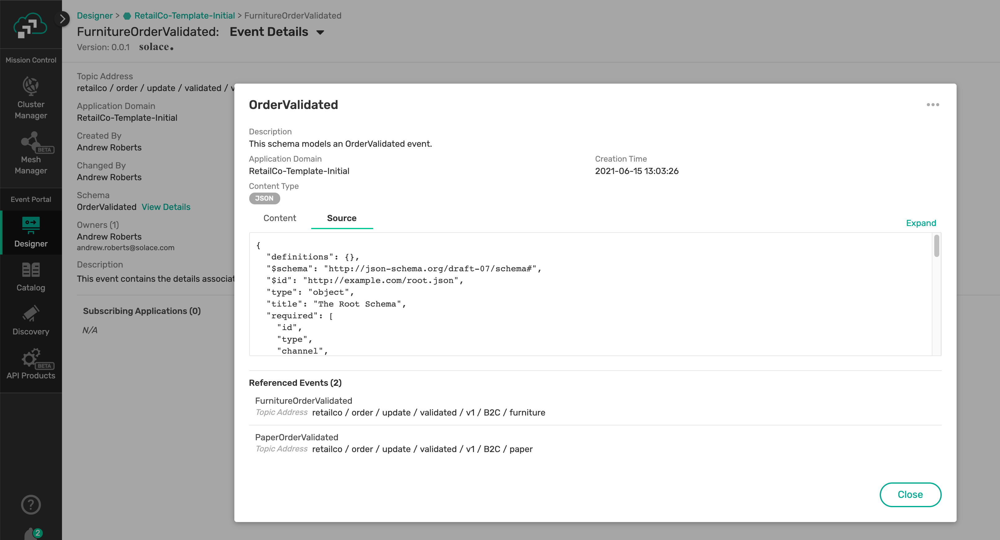
Update OrderValidationProcessor to produce FurnitureOrderValidated events
Now that we've created our FurnitureOrderValidated event and defined its payload, we need to update OrderValidationProcessor to produce it.
To do this follow these steps:
- Right click on the OrderValidationProcessor Application and choose Manage Events
- For ease of searching, tick the Only show events in this Application Domain checkbox on
- Search for "FurnitureOrderValidated" and click "Pub" next to it since the OrderValidationProcessor needs to publish these events.
- Click Save
✅ OrderValidationProcessor is now complete and you should see it publishing both PaperOrderValidated and FurnitureOrderValidated events.
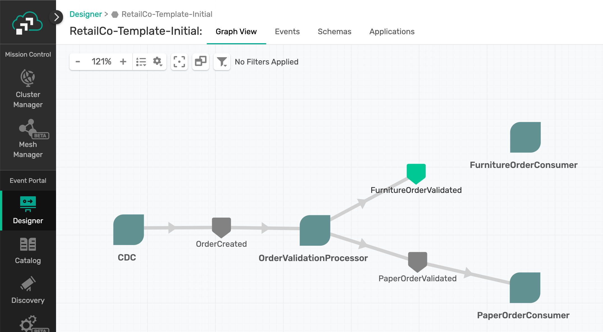
Update FurnitureOrderConsumer to consume FurnitureOrderValidated events
Lastly, we need to update FurnitureOrderConsumer to consume FurnitureOrderValidated events.
To do this follow these steps:
- Right click on the FurnitureOrderConsumer Application and choose Manage Events
- For ease of searching, tick the Only show events in this Application Domain checkbox on
- Search for "FurnitureOrderValidated" and click "Sub" next to it since the FurnitureOrderConsumer needs to subscribe to these events.
- Click Save
✅ FurnitureOrderConsumer is now complete and you should see it consuming FurnitureOrderValidated events published by the OrderValidationProcessor!
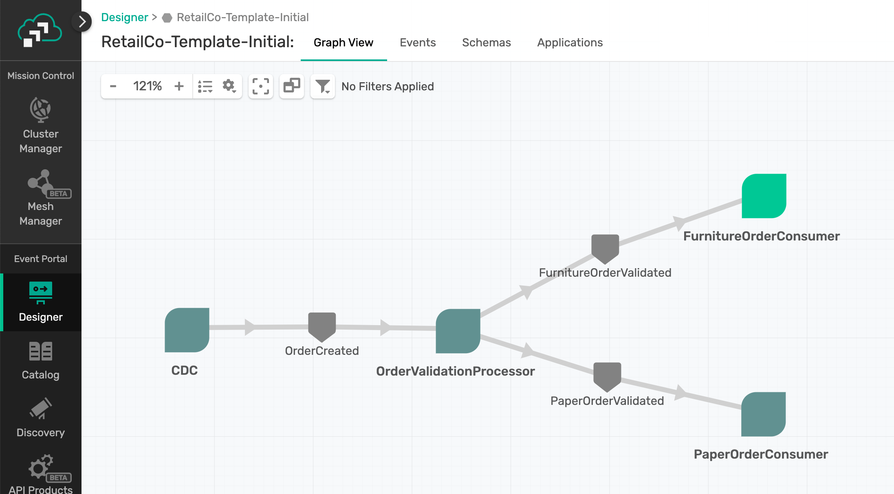
Next up, we'll develop the application in Spring Cloud Stream with the help of AsyncAPI Generator.
Now that we've defined the architecture for our use case in the Event Portal we're ready to write some code! But we don't want to have to write everything from scatch so we're going to use the AsyncAPI Generator
In order to use the AsyncAPI Generator we first need to install the CLI.
If you have the prequisites installed as defined earlier in the "What You'll Need" section you should be able to pop open your terminal and use the command below to install the CLI.
npm install -g @asyncapi/generator
If you don't have Node.js installed or would rather use Docker, they also make AsyncAPI Generator available as an image and provide instructions for it here.
On to developing the FurnitureOrderConsumer microservice. As mentioned, we want to implement this app using the Spring Cloud Stream framework. For more information on the framework the reference guide is an excellent resource.
Generate the Code Skeleton
In the Solace Event Portal right click on the FurnitureOrderConsumer, Choose Download AsyncAPI, Choose YAML, and click Download.
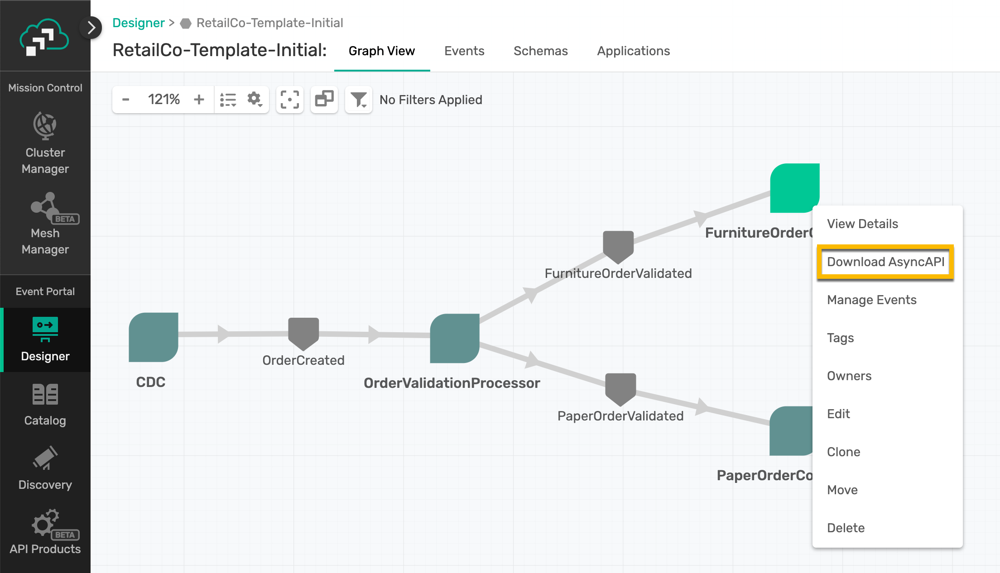
It should includes a lot of the information about the app that we defined via the Event Portal, including:
- The title and description under the info section
- Our events, referred to as messages in the AsyncAPI specification
- The schemas that define the payloads of our events
- The channels on which the events are exchanged, i.e. Solace topics
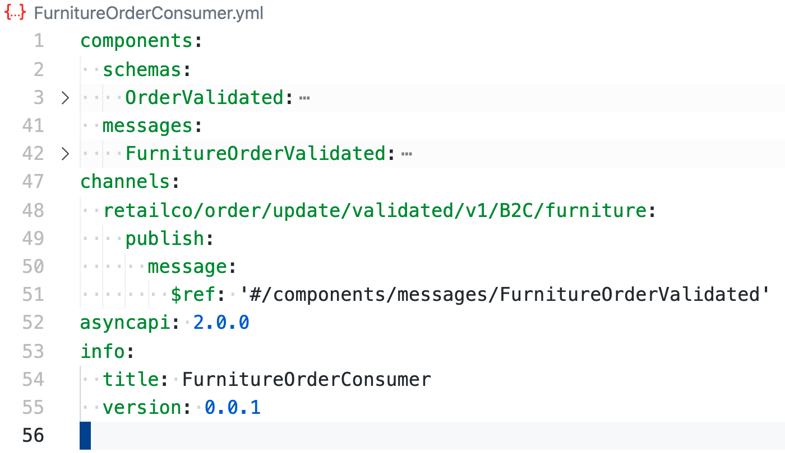
We're now ready to generate the code! Head over to your terminal and enter the following command:
ag -o FurnitureOrderConsumer -p binder=solace -p artifactId=FurnitureOrderConsumer -p groupId=org.retailco.orders -p javaPackage=org.retailco.orders -p host=tcps://mr-6tk1zswq96n.messaging.solace.cloud:55443 -p username=solace-cloud-client -p password=vk10kjmr1j4pd7q4ml3ej0a83n -p msgVpn=azure-east-us-2 ~/Downloads/FurnitureOrderConsumer.yml @asyncapi/java-spring-cloud-stream-template
Note the different pieces of the command:
agis the AsyncAPI Generator command-ois the output directory-pallows you to specify parameters defined for the template you're usingbinderis the Spring Cloud Stream binder you wish to use, in this case SolaceartifactId&groupIdconfigure Maven params of the same namesjavaPackagespecifies the Java Package to place the generated classes intohost,username,passwordandmsgVpnallow you to set binder connection information, i.e. Solace connection details- The YAML file (second to last option) is the location of your AsyncAPI specification
- And lastly,
@asyncapi/java-spring-cloud-stream-templateis the AsyncAPI Generator template we are using.
✅ After running the command you should see output that ends with where you can find your generated files.
Done! ✨
Check out your shiny new generated files at /private/tmp/codelab/FurnitureOrderConsumer.
💥Boom💥 We've generated our code skeleton!
Import and Explore the Generated Project
The generated project is a Maven project, so head over to your favorite IDE and import the project so we can add our business logic. Once imported you should see something like the image below:
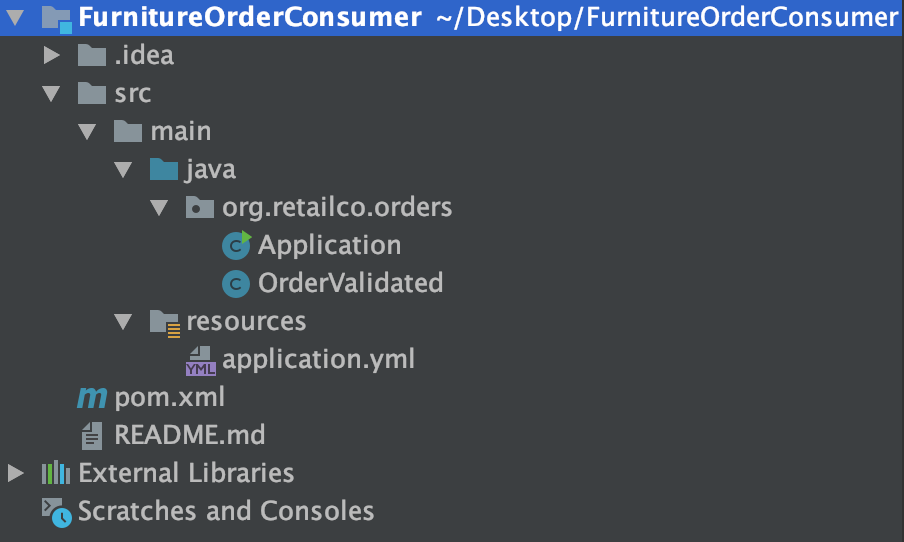
A few notes on the project:
- The generated Java classes are in the
org.retailco.orderspackage that we specified. - The
OrderValidatedPOJO was generated from the schema defined in our AsyncAPI spec, and includes getters/setters/toString/etc. Application.javacontains a Consumer method that will trigger whenever an event is received on the channel specified by the event definition, and inside the method can use a functional programming model to access the event's payload as an already-deserializedOrderValidatedobject.- The Consumer methods name,
retailcoOrderUpdateValidatedV1B2CFurnitureConsumer, was autogenerated by removing the topic delimiter/and camel casing each topic level. This CAN be overridden by modifying the AsyncAPI specification file before running the code generator to include ax-scs-function-nameproperty, and the queue name for the Consumer can also be overridden using thex-scs-destinationproperty. More details here. - The
application.ymlfile contains the Spring configuration which tells our app how to connect to Solace using the SCSt binder as well as which message channels to bind our methods to. - The
pom.xmlfile contains the dependencies needed for the microservice. These include thespring-cloud-starter-stream-solacedependency which allows you to use the Solace SCSt Binder.
Fill in the Business Logic
Navigate to and open the Application.java file. We're going to edit the retailcoOrderUpdateValidatedV1B2CFurnitureConsumer method to add our business logic. Remember that our Use Case defines that our FurnitureOrderConsumer should listen to the stream of FurnitureOrderValidated events. In real life, we'd be doing something with the validated orders-but in this CodeLab we're just logging out some of the payload properties to show how easy they are to access.
Go ahead and code up this business logic yourself or feel free to add your business logic by looking at the code snippet available below.
package org.retailco.orders;
import org.slf4j.Logger;
import org.slf4j.LoggerFactory;
import org.springframework.boot.SpringApplication;
import org.springframework.boot.autoconfigure.SpringBootApplication;
import org.springframework.context.annotation.Bean;
import java.util.function.Consumer;
@SpringBootApplication
public class Application {
private static final Logger logger = LoggerFactory.getLogger(Application.class);
public static void main(String[] args) {
SpringApplication.run(Application.class);
}
@Bean
public Consumer<OrderValidated> retailcoOrderUpdateValidatedV1B2CFurnitureConsumer() {
return furnitureOrderValidated -> {
logger.info("Received Furniture Order Validated Event: " + furnitureOrderValidated.toString());
};
}
}
Now that our FurnitureOrderConsumer app has been developed, let's run it!
If your IDE has support for Spring Boot you can run it as a Spring Boot App.
Or run it from the terminal by navigating to the directory with the pom and running the mvn clean spring-boot:run command.
The microservice is now is now running, connected to the Solace Event Broker, and receiving events. You should see the payloads of the FurnitureOrderValidated events being logged to your console!
✅ Solace Event Portal is a tool that helps you design and visualize your Event-Driven Architecture, discover what applications/events/schemas exist, collaborate with your team, and kickstart development via exporting of AsyncAPI specifications.
✅ AsyncAPI Generator templates streamline the way developers create event-driven applications by generating code skeletons that are pre-wired with the events and channels defined in the AsyncAPI specifications.
✅ Spring Cloud Stream allows developers to implement highly scalable, event-driven microservices without having to learn how to use messaging APIs.
Thanks for participating in this codelab! Let us know what you thought in the Solace Community Forum! If you found any issues along the way we'd appreciate it if you'd raise them by clicking the Report a mistake button at the bottom left of this codelab.